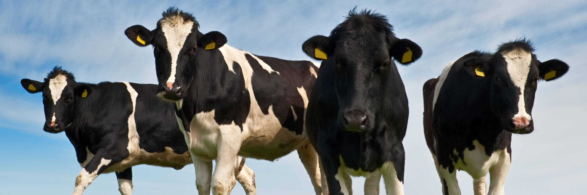

Первичное производство молока

Основная пища для растущего мира
Молоко – это сложный пищевой продукт, содержащий питательные вещества, жизненно важные для роста млекопитающих. В первом периоде жизни млекопитающие употребляют исключительно молоко, полезные вещества, содержащиеся в нем, обеспечивают их энергией и антителами, помогающими противостоять инфекциям. Для человека молоко и молочные продукты являются важным источником кальция, магния, селена, рибофлавина, витамина В12 и пантотеновой кислоты (витамин В5) и потому играют ключевую роль в нашем развитии.
История производства молока
Молочные породы, существующие сейчас, – это результат тысячелетней селекции диких животных, которые жили на разных высотах и в разных широтах, порой в суровых и экстремальных погодных условиях. Методы получения молока от коров, коз, овец и буйволов сформировались примерно шесть тысяч лет назад. Этих животных доят и до сих пор. Естественно, что человек выбрал этих травоядных для удовлетворения потребности в пище и одежде, ведь они не так опасны, и содержать их проще, чем хищников. Животные, дающие молоко, – это жвачные, они едят быстро и в больших количествах, а пищу переваривают некоторое время спустя.
Самые распространенные молочные животные сегодня – это коровы. Их можно встретить на любом континенте. Другими животными, традиционно используемыми как в частном секторе, так и в промышленном производстве молочных продуктов, являются козы, овцы и буйволы. Их молоко исключительно важно для сельских общин, потому что оно содержит высококачественные белки и другие полезные вещества. Овцы и козы особенно важны в таких зонах, как Средиземноморье, и на обширных территориях Африки и Азии. В мире насчитываются миллиарды овец и коз, их больше, чем других животных, производящих мясо и молоко. Козы и овцы имеют важное значение в производстве мяса и молока в самых бедных регионах. Они – дешевый источник пищи, в основном их разводят в местах, где климатические, топографические, экономические, технические и социальные факторы ограничивают развитие более совершенных систем получения белка.
Питательные свойства молока
В число основных минералов и витаминов, содержащихся в молоке, входят железо и витамин D. Однако их или недостаточно для сбалансированного питания, или они содержатся не в оптимальных пропорциях. В начальный период жизни животное компенсирует недостаток питательных веществ в молоке за счет резервов, полученных от матери при рождении, обычно их хватает до момента, когда детеныш начнет употреблять и другую пищу. Чтобы питательные вещества было легче переваривать с пищей, они поступают в жидком виде, частично в виде раствора, частично как дисперсия или суспензия. Хотя молоко разных млекопитающих и содержит одинаковые компоненты, их баланс значительно различается.
Количественный состав основных компонентов сырого молока может значительно отличаться у коров как разных, так и одной породы. Основным компонентом является вода – средство доставки всех других веществ. Коровье молоко состоит примерно из 87 % воды и 13 % сухого вещества, которое взвешено или растворено в воде. Помимо «общего количества сухих веществ» при описании состава молока также используется термин «сухой обезжиренный остаток».
Коровы
С того момента, как шесть тысяч лет назад коровы стали домашними животными, в генетическом строении вида Bos Taurus произошли значительные изменения. Наиболее важным из них стало то, что современная дойная корова дает гораздо больше молока, чем нужно ее теленку. Генетическое развитие привело к значительному росту производства молока. Современные коровы дают его примерно в шесть раз больше, чем их далекие предки. Даже около тридцати лет назад корова обычно давала не более 4000 килограммов молока на теленка, в то время как современная корова дает от 7000 до 12 000 килограммов. Некоторые коровы могут давать до 14 000 литров молока на теленка и даже больше. Это генетическое развитие стало возможным благодаря значительному росту информации о той важной роли, которую играют правильное содержание стада, здоровье животных и оптимизированное кормление.
Как и все млекопитающие, коровы производят молоко, чтобы кормить свое потомство. Следовательно, образование молока непосредственно связано с репродуктивным циклом. Прежде чем корова начнет давать молоко, у нее должен родиться теленок. Коровы достигают половой зрелости в возрасте шести-семи месяцев, и тогда их начинают называть «телками». Телок обычно оплодотворяют, когда им исполняется 15–18 месяцев, или «естественным спариванием» с быком, или используя искусственное осеменение. Беременность обычно длится 265–300 дней, и телочки чаще всего производят на свет своего первого теленка в возрасте 2–2,5 лет. После отела их обычно вновь оплодотворяют через четыре-восемь недель.
Секреция и период лактации
Молоко образуется в коровьем вымени – полусферическом органе, разделенном складкой на правую и левую половины. Каждая половина разделена на четверти более мелкой поперечной складкой. У каждой четверти есть сосок с молочной железой. Поэтому теоретически от одной коровы можно получить молоко с четырьмя различными характеристиками. Вымя в разрезе приводится на рис. 1.1.
Вымя коровы состоит из железистой ткани, содержащей клетки, вырабатывающие молоко. Внешний слой этой ткани – мышечный, он связывает вымя в единое целое и защищает его от повреждений. Железистая ткань содержит около двух миллиардов крошечных пузырьков, называемых альвеолами. Клетки, вырабатывающие молоко, расположены на внутренней стенке этих альвеол и размещаются группами по 8–120. Капилляры, выходящие из этих альвеол, соединяются во все более крупные млечные протоки, которые идут к полости над соском. Эти полости, называемые молочными цистернами, могут вместить до 30 % всего молока, находящегося в вымени. Молочная цистерна вымени имеет сосковую цистерну, удлиненную часть, спускающуюся в сосок. На конце соска находится проток длиной 1–1,5 сантиметра. В период между доениями сосковый проток перекрывается мышечным сфинктером, который не позволяет молоку вытекать наружу, а бактериям – проникать внутрь вымени. Все вымя пронизано кровеносными и лимфатическими сосудами. По ним кровь, богатая питательными веществами, поступает от сердца к вымени, где распределяется по капиллярам, окружающим альвеолы. Таким образом, клетки, вырабатывающие молоко, снабжаются питательными веществами, необходимыми для выделения молока. Обедненная кровь уносится по капиллярам к венам и возвращается в сердце. Через вымя проходит большое количество крови. Так, корове, дающей 60 литров молока в день, требуется, чтобы через ее молочные железы прошло примерно 30 000 литров крови.
По мере того как в альвеолах вырабатывается молоко, растет внутреннее давление. Если корову не доить, то когда давление достигает определенного значения, выделение молока прекращается. Повышение давления приводит к принудительной подаче небольшого количества молока в более крупные каналы и вниз в цистерну. Однако основная часть молока вымени продолжает оставаться в альвеолах и сопутствующих тонких капиллярах. Они настолько тонки, что молоко не может протекать по ним самостоятельно. Молоко должно быть выдавлено из альвеол и далее через капилляры в крупные каналы. Эту работу во время доения выполняют окружающие каждую альвеолу клетки, напоминающие мускулы (см. рис. 1.2).
Секреция молока в вымени коровы начинается незадолго до ее отела, что позволяет теленку питаться практически сразу после рождения. После этого корова продолжает давать молоко примерно 10 месяцев (около 305 дней). Этот период называется периодом лактации. В течение периода лактации надои постепенно снижаются и через 305 дней могут снизиться до 25–50 % от их максимальной величины. На этой стадии доение прекращают на период до 60 дней перед следующим отелом. С рождением теленка наступает новый лактационный цикл.
У вымени также есть лимфатическая система. По ней из вымени удаляются продукты распада. Лимфатические узлы выполняют роль фильтров, в которых уничтожаются посторонние вещества, а также вырабатываются лимфоциты для борьбы с инфекциями. Иногда, когда корова рожает в первый раз, отел может сопровождаться отечностью, частично вызванной наличием молока в вымени, которое давит на лимфатические узлы.
Молозиво
При рождении у телят нет собственной иммунной защиты, так как их иммунная система развивается медленно. В этой связи первое молоко, полученное от коровы после отела и называемое «молозиво», существенно отличается от обычного молока как по составу, так и по питательным свойствам. Телята получают материнские антитела и жизненно необходимый иммуноглобулин с молозивом. Антитела – это глобулярные белки, вырабатываемые системой иммунного ответа для борьбы с болезнями. Индивидуумы различаются своей способностью вырабатывать антитела и, таким образом, противостоять болезням. Животные, получающие молозиво низкого качества, особенно восприимчивы к инфекционным заболеваниям и подвержены связанной с этим диарее. Для нормального роста теленку требуется около 1000 литров молока, именно столько и дает дикая корова на каждого теленка. Для того чтобы проиллюстрировать выработку молока отдельной коровой, обычно строится график надоев молока как функции времени, составляющий лактационную кривую. В первые месяцы выход молока растет вместе с теленком, а затем следует продолжительный период постепенного спада. Форма лактационной кривой в каждом конкретном случае будет индивидуальной и зависит от породы. Кормление и уход также влияют на график и оказывают очень сильное влияние на общее количество произведенного молока. Теоретически лактация длится 305 дней, хотя на практике обычно дольше, затем два месяца (до появления нового теленка) молока не бывает.
Доение
При доении в кровь коровы выделяется гормон окситоцин, способствующий выделению молока из вымени. Этот гормон вырабатывается и накапливается в гипофизе. Когда корова в результате надлежащего стимулирования подготовлена к доению, в гипофиз поступает сигнал, и весь накопленный объем окситоцина поступает в кровь. У дикой коровы таким стимулом были попытки теленка сосать вымя. Окситоцин выделялся, когда корова чувствовала, как теленок сосет. У современной коровы молочной породы во время доения рядом нет телят, поэтому стимулирование «выпуска» молока осуществляется подготовкой к доению, то есть звуками, запахами и ощущениями, ассоциирующимися с доением. Гормон окситоцин начинает оказывать воздействие обычно в течение минуты с момента начала подготовки к доению и вызывает сжатие альвеол клетками, похожими на мускулы. Это приводит к возникновению давления в вымени, что может ощущаться рукой, и известно как рефлекс выброса молока. Это давление вытесняет молоко в сосковый отдел цистерны, из которого оно высасывается в стакан доильного аппарата или выжимается пальцами при ручном доении. Воздействие рефлекса выброса молока постепенно снижается, по мере того как концентрация окситоцина в крови уменьшается, а сам он распадается, полностью исчезая через 5–8 минут. Следовательно, доение должно быть закончено в течение этого периода времени. Попытки продления процесса доения с целью «выдаивания» коровы приводят к нежелательной нагрузке на вымя, при этом корова становится раздражительной и ее часто становится сложнее доить.
Молочный жир в основном состоит из триглицеридов, синтезированных из глицеринов и жирных кислот. Длинноцепочечные жирные кислоты абсорбируются из крови. Короткоцепочечные жирные кислоты синтезируются в молочных железах из компонентов: ацетата и бета-гидроксибутирата, поступающих из крови. Молочный белок синтезируется из аминокислот, также поступающих с кровью, и состоит в основном из казеинов и незначительной доли сывороточного белка. Лактоза синтезируется в клетках, вырабатывающих молоко из глюкозы и галактозы. Витамины, минералы, соли и антитела переносятся цитоплазмой клетки из крови в альвеолярный просвет.
Частота доения
С учетом схемы организации работы и рабочих часов в промышленных странах общей практикой было доение два раза в день. В странах с дешевой рабочей силой часто практикуется более частое доение. За последние десятилетия все большее внимание уделяется более частому доению, особенно для высокопродуктивных пород. Более частое доение имеет ряд преимуществ. Переход с двухразового на трехразовое доение значительно повышает выработку молока. Согласно опубликованным данным, одно дополнительное доение может увеличить получение молока от одной коровы в день на 5–25 %. При этом процесс лактации становится более стабильным и длительным. Причиной роста выработки молока при более частом доении может быть более частое попадание в молочную железу гормонов, стимулирующих выделение молока. Однако, как уже упоминалось выше, молоко содержит ингибитор, отрицательно влияющий на выделение молока. Следовательно, чем чаще мы будем удалять этот ингибитор, тем выше будет производство. Коровы с небольшой цистерной вымени более чувствительны к частому доению. Чем меньше цистерна вымени, тем выше чувствительность к частому доению.
У частого доения есть как краткосрочные, так и долгосрочные эффекты. В краткосрочной перспективе производство молока возрастает за счет активизации клеток, выделяющих молоко. В долгосрочной перспективе производство молока возрастает за счет роста числа клеток, выделяющих молоко. Последнее указывает на возможность влиять на число клеток, выделяющих молоко при стабилизировавшейся лактации, что важно для способности животного производить молоко. В число положительных сторон более частого доения также входит благотворное влияние на здоровье животного. Наблюдения за высокопроизводительными животными показали, что они обычно не ложатся в течение нескольких часов перед доением. Более того, многие высокопродуктивные породы коров производят до 60 килограммов молока в день, и их доят дважды в день с перерывами на 8–16 часов. Только во время утренней дойки эти коровы дают примерно 40 кг молока. Если у коровы так много молока в молочных железах, то они ощущают повышенное давление в вымени, что, без сомнения, вызывает дискомфорт. Было замечено, что высокопродуктивные коровы, если им предоставляется выбор, предпочитают, чтобы их доили чаще, а не два или три раза в день.
Методы доения
Традиционное ручное доение
Ручное доение применяется на фермах по всему миру уже несколько тысяч лет. На небольших фермах коров, как правило, доит один и тот же человек, и они привыкают к нему. Рефлекс выброса молока стимулируется знакомыми звуками подготовки к доению. Самые первые струйки жидкости из соска обычно изолируются, а затем проводится тщательный осмотр первого молока, что позволяет дояру отметить видимые признаки, свидетельствующие о том, здорово ли вымя. Одновременно выдаиваются две противоположные доли вымени: одна рука выдавливает молоко из цистерны соска, после чего давление ослабляется, чтобы новое молоко поступило из цистерны вымени. А в это время молоко выдавливается из другого соска. Таким образом, два соска выдаиваются попеременно. После того как две доли будут выдоены, дояр может переходить к двум другим. Молоко собирают в подойники и переливают для удаления крупных примесей через фильтр во фляги емкостью 30–50 литров. Фляги охлаждают до 4 °C и хранят до транспортировки на молочное предприятие. Обычно для охлаждения применяют форсуночные или погружные охладители.
Традиционные системы доения
Принципиальная схема доильного аппарата показана на рис. 1.3. Доильный аппарат извлекает молоко при помощи вакуума. Основными элементами доильного аппарата являются вакуумный насос, вакуумная емкость, емкость для сбора молока, доильные стаканы и пульсатор. Доильный стакан состоит из стакана, в котором находится внутренняя резиновая трубка, называемая сосковым чулком. Внутри этой трубки, контактирующей с соском, при доении постоянно поддерживается разрежение 50 кПа (50%-й вакуум). Давление в пульсационной камере (между сосковым чулком и доильным стаканом) ритмично меняется пульсатором от 50 кПа на стадии высасывания до атмосферного давления на стадии массирования. В результате на стадии высасывания молоко высасывается из цистерны соска. На стадии массирования сосковый чулок прижимается к стакану, обеспечивая массаж соска. После чего следует еще одна стадия высасывания и так далее, как это показано на рис. 1.4. Расслабление соска на этапе массажа необходимо во избежание прилива крови и жидкости к соску. Подобная перегрузка соска может причинять боль корове, что может повлиять на рефлекс выброса молока и молокоотдачу. Повторные перегрузки во время последующих доек могут даже сказаться на здоровье вымени. Пульсатор чередует стадии высасывания и массирования со скоростью 50–60 раз в минуту. Четыре доильных стакана, подсоединенных к коллектору доильного аппарата, удерживаются на сосках за счет присасывания и трения между соском и сосковым чулком. Вакуум попеременно (поочередные пульсации) подается к левым и правым соскам или, в некоторых случаях, к передним и задним соскам. Подача вакуума ко всем четырем соскам одновременно (одновременные пульсации) менее распространена. Молоко попадает из сосков непосредственно в подойник или по вакуумной транспортной линии в приемник. Если при доении доильный стакан отпадает, автоматически срабатывает отсекающий клапан, что исключает попадание загрязнений в систему. После завершения дойки подойник относят в отделение приемки, где его опорожняют во флягу или в специальный резервуар для охлаждения. Для исключения трудоемкой и отнимающей много времени работы по переносу наполненных подойников в отделение приемки может быть установлена система трубопроводов для прямой транспортировки молока в отделение приемки (рис. 1.5). Подобные системы в настоящее время особенно популярны. Они позволяют перекачивать молоко по закрытым системам непосредственно от коровы в резервуары, находящиеся в отделении приемки. Это является значительным преимуществом с точки зрения обеспечения норм гигиены. Вне зависимости от того, куда система направляет молоко: в ведро, молокопровод или в автоматизированную систему, важно, чтобы система не допускала попадания в нее воздуха во время доения. Значительное поступление воздуха может повлиять на качество молока и привести к повышению уровня свободных жирных кислот. Установка для машинного доения также снабжается системой безразборной мойки.
Автоматизированные системы доения
Доение является одной из наиболее трудоемких и времязатратных профессий на молочной ферме. Кроме того, доение производится не менее двух раз в день круглый год. Автоматизированные системы доения (рис. 1.6) являются одним из решений данной проблемы, так как позволяют владельцам крупной молочной фермы сэкономить на трудозатратах, получить молоко более высокого качества, позаботиться о здоровье стада и повысить выход продукта. В отличие от обычного доения, когда человек готовит корову к доению, при автоматизированном доении упор делается на том, чтобы корова привыкала к тому, что доение происходит несколько раз в день без участия человека. На рис. 1.8 показана схема типовой молочной фермы с автоматизированной системой доения. Когда корова чувствует потребность в доении, она заходит в доильное отделение. Радиомаячок на корове позволяет ее идентифицировать, и, если корову недавно уже доили, ее отправляют в зону отдыха или на кормление. Корова входит в отделение автоматизированного доения, где получает определенное количество концентрата. В системе автоматического доения (или «системе добровольного доения») соски находят при помощи лазера и видеокамеры. Например, соски могут быть вымыты раздельно при помощи прибора, похожего на стакан (рис. 1.7), с использованием пульсирующей прохладной воды, подаваемой под определенным давлением, что обеспечивает эффективную очистку. Сушка сосков осуществляется сжатым воздухом, подаваемым в тот же «стакан».
Преддоильная обработка коровы происходит в том же «стакане», в который после очищающего цикла подается вакуум. В самом конце «моющие стаканы» промываются водой. Сенсоры определяют, была ли произведена преддоильная обработка коровы, на несколько секунд подключают систему предварительного доения так, чтобы было удалено достаточное количество молока и заработал рефлекс выброса молока. Последовательно автоматически подключаются доильные стаканы, а молоко из четырех сосков поступает в разные емкости до тех пор, пока молокомер не зарегистрирует количество молока, надоенного из каждой четверти. Заключительным этапом автоматического доения является обработка каждого соска дезинфицирующим спреем.
Качество молока и здоровье животных
Обычно продуктивность коровы ограничена примерно тремя периодами лактации. Основой экономически выгодного производства молока являются относительно высокий выход при высоком качестве в течение всего планируемого срока использования животного и исключение любых случаев непреднамеренной выбраковки. Это означает высокую выработку от здоровых животных, не страдающих никакими заболеваниями. Для молочных коров наиболее распространенным и разорительным заболеванием является мастит. В большинстве случаев фермер узнает только о клинических случаях. Сообщалось, что случаи клинического мастита обычно составляют от 20 до 100 заболеваний на 100 коров в год. Процент бессимптомной инфекции составляет 5–35 % всех коров, зараженных более сильной патогенной бактерией. Фермеру гораздо проще диагностировать клинический мастит. Симптомы включают свертывание и обесцвечивание молока, опухание и покраснение желез. В серьезных случаях корову лихорадит, и она теряет аппетит. Бессимптомный мастит часто труднее заметить, так как и молоко, и вымя выглядят вполне нормальными, в то время как в молоке увеличивается количество соматических клеток. Мастит – воспаление молочных желез, которое может вызываться бактериальными инфекциями или травмами. Когда бактерии растут, они выделяют метаболиты и токсины, которые стимулируют защитные механизмы коровы. Воспалительная реакция ведет к перемещению лейкоцитов из периферического кровообращения в вымя. Их количество в молоке возрастает со 100 000 клеток на миллилитр или менее на одну долю вымени до нескольких миллионов. Повышенное содержание лейкоцитов сопровождается активацией некоторых молочных ферментов.
Научные основы комфорта для коров
Производство высококачественного молока напрямую связано с хорошим самочувствием животного, и комфортные условия, как было показано, оказывают огромное влияние как на качество, так и на количество молока. Наблюдения и накопленный опыт показывают, что коровы, содержавшиеся в комфортной обстановке, дают больше молока и обычно живут дольше, отличаясь более крепким здоровьем. У них должно быть достаточное количество качественных кормов и воды, свежий воздух и чистая подстилка для отдыха плюс твердая земля под ногами. Их необходимо стимулировать, для того чтобы они вели себя как можно более естественно и легко стояли или ложились. Мастит, стертые ноги, натертая шея, натертые и распухшие пяточные суставы могут свидетельствовать о проблемах с комфортом.
Важной концепцией всех систем животноводства является концепция самочувствия животного и пяти свобод. Пять свобод относятся к идеальному состоянию животного и включают:
- свободу от голода и жажды;
- свободу от дискомфорта;
- свободу от боли, ран и заболеваний;
- свободу вести себя естественно;
- свободу от страха и стрессов
Хорошее самочувствие животного означает, что у животного хорошее здоровье (как физическое, так и психическое), и оно не подвергается излишним страданиям (Совет по защите прав животных, 2009). Концепция комфорта коровы на молочной ферме включает самочувствие животного и продуктивность. И, соответственно, владельцы молочных ферм должны стремиться создавать для коров условия с минимальным риском того, что корова будет испытывать голод, жажду, дискомфорт и боль. Создание для молочных коров обстановки, в которой они будут чувствовать себя комфортно, является очень важным как с точки зрения самочувствия животного, так и экономической точки зрения. Помимо размеров, комфорт стойла, в котором находится корова, зависит от типа и качества материала, выбранного для подстилки. Материал подстилки должен обеспечивать комфортное тепло и быть мягким, но при этом долговечным и обеспечивать необходимое трение, чтобы животное могло вставать и ложиться, не боясь поскользнуться. Материал подстилки также должен помогать животным оставаться чистыми и здоровыми и при этом требовать минимального ежедневного ухода.
Все больше исследований изучают комфортные условия для молочных коров, однако проведенные наблюдения и накопленный опыт показывают, что коровы, содержавшиеся в комфортной обстановке, дают больше молока и обычно живут дольше, отличаясь более крепким здоровьем. Термин «долголетие коровы» в молочной промышленности обычно используется для описания времени, в течение которого корова находится в стаде. Принято делить всю жизнь коровы на время до и после рождения первого теленка. В 2007 году в молочных стадах США средний возраст на момент рождения первого теленка составлял 25,2 месяца (Минсельхоз США, 2007). Это несколько ниже, чем показатель 2002 г. (25,4 месяца), и на 6 месяцев меньше по сравнению с 25,8 месяца в 1996 году. В 2012 г. он все еще оставался на уровне 25,5 месяца (Хайнрихс и Джонс, 2013). Возраст рождения первого теленка дает слегка завышенную оценку ожидаемого долголетия новорожденной коровы, так как в него не входят примерно 15 % телок, которых выбраковывают еще до рождения первого теленка.
Выбраковка – это выбытие животного из стада в результате продажи, забоя, заболеваний и смерти. Продолжительность продуктивного периода – это время от рождения первого теленка до выбраковки. Оно рассчитывается как обратное к проценту выбраковки (коров). Годовой процент выбракованных коров в 2013 г. составлял примерно 38 % (DRMS, 2013) и был достаточно стабильным на протяжении ряда лет (Минсельхоз США, 2013; рис. 1). Это эквивалентно продолжительности продуктивного периода в 2,63 года или 31,6 месяца. Следовательно, средняя продолжительность жизни молочной коровы составляет примерно 57,1 месяца или 4,8 года в США.
По данным Минсельхоза США продолжительность продуктивного периода снизилась с 35 месяцев для коров, родившихся в 1960 году, на 40 % у коров, родившихся в 2000 (Минсельхоз США-AIPL, 2013). В 1930 г. средний процент ежегодной выбраковки составлял около 25 % (Каннон и Хансен, 1939). Сообщалось, что естественная продолжительность жизни у крупного рогатого скота доходит до 20 лет, когда он умирает от старости. Более короткая продолжительность жизни является следствием экономических решений, принимаемых владельцами молочных ферм. Производители молока выбраковывают коров, когда они теряют рентабельность и их заменяют более прибыльными коровами.
Важность выбора конструкции сосковой резины и трубопровода
В доильном аппарате сосковая резина является единственной частью устройства для доения, непосредственно соприкасающейся с животным. Качество и характеристики каждой сосковой резины в значительной степени влияют на процесс доения и общее здоровье животного. Что особо важно, работоспособность и гигиена подвергаются риску, если сосковую резину продолжают использовать по истечении рекомендованного срока. Первый критерий связан с оборудованием. Сосковая резина должна соответствовать используемому на ферме оборудованию в привязке к коллектору доильного аппарата, стакану и реагенту, используемому для очистки коллектора, или к моечной установке с соплами. Помимо этого, принимаются во внимание средний размер соска в стаде и степень загрязнения вымени.
Охлаждение молока
Температура молока на выходе из вымени составляет около 37 °С. Свежевыдоенное молоко здоровой коровы практически не содержит бактерий, однако, после того как оно покинет вымя, оно должно быть защищено от загрязнения. Микроорганизмы, способные испортить молоко, находятся повсюду – на поверхности вымени, руках доярки, частицах пыли в воздухе, каплях воды, соломе и сене, на шерсти животного и в почве. Перед подачей молока в цистерну его принято фильтровать. Быстрое охлаждение молока после доения является лучшим способом предотвращения роста бактерий (рис. 1.9). В наличии имеются различные системы охлаждения, и их выбор зависит от объемов производимого молока. Охладитель молока во флягах, показанный на рис. 1.10, подходит для небольших хозяйств. Его любят те, кто использует водоохладители, и производители, использующие оборудование для доения во фляги. Погружной охладитель молока предназначен для прямого охлаждения молока во флягах и молокосборниках. Компрессор монтируется на стене, рис. 1.11. Испаритель расположен в нижней части погружаемого блока. Погружной охладитель также может применяться при непрямом охлаждении, то есть для охлаждения воды в изотермических резервуарах. Затем молоко охлаждают, погружая транспортные фляги в охлажденную воду. Изотермические резервуары для ферм, применяемые с погружными охладителями, доступны как в стационарном, так и в мобильном варианте (рис. 1.12). Когда дорожная ситуация исключает подъезд молочных цистерн, можно использовать мобильный изотермический резервуар для доставки в точку, удобную для приемки молока. Мобильные резервуары легко перевозить и, таким образом, они подходят для доения в полевых условиях. Резервуары непосредственного охлаждения, показанные на рис. 1.13, также можно использовать для охлаждения и хранения молока.
Особое внимание следует уделять вопросам гигиены для производства качественного стерильного молока. Однако, несмотря на все предосторожности, практически невозможно полностью исключить попадание бактерий в молоко. Молоко является отличной средой для роста бактерий, оно содержит все необходимые им питательные вещества. Поэтому, как только бактерии попадают в молоко, они начинают размножаться. С другой стороны, свежевыдоенное молоко содержит природные бактерицидные вещества, защищающие молоко от воздействия микроорганизмов в течение некоторого времени после дойки. Инфицирующим микроорганизмам требуется некоторое время, чтобы приспособиться к новой среде, прежде чем они начнут расти.
При хранении важно держать молоко при низкой температуре. Активность микроорганизмов будет без труда повышаться, если температуре позволят подняться всего лишь на несколько градусов выше рекомендованной температуры хранения. Рис. 1.14 показывает динамику скорости роста бактерий при различных температурах. На фермах, которые поставляют молоко на молочные заводы во флягах, применяют форсуночные или погружные охладители. В форсуночном охладителе циркулирующую холодную воду распыляют на внешнюю поверхность фляг для поддержания молока в охлажденном состоянии. Погружной же охладитель состоит из змеевика, опускаемого во флягу. По нему циркулирует холодная вода, поддерживая требуемую температуру молока. При машинном доении молоко обычно собирают в специальные резервуары, имеющиеся на ферме. Подобные резервуары выпускаются разной емкости и снабжаются встроенным охлаждающим оборудованием, гарантирующим охлаждение до определенной температуры за определенный промежуток времени. Эти резервуары часто оснащаются устройствами для автоматизированной мойки, гарантирующими стабильные высокие гигиенические показатели. В больших хозяйствах и в пунктах сбора, где большие объемы молока (более 5000 литров) необходимо быстро охладить с 37 °C до 4 °C, нужно использовать соответствующее оборудование для больших емкостей. В таких случаях сама емкость в основном используется для поддержания требуемой для хранения температуры, а основная часть охлаждения происходит с помощью теплообменника, встроенного в подающий трубопровод (рис. 1.15).
Буйволиное молоко
Буйволиц используют для получения молока уже много столетий. Это наиболее распространенный источник молока в Азии и в некоторых регионах Африки. У этого животного много различных подвидов, и доминирующий подвид в каждом районе свой. В настоящее время в мире насчитывается примерно 150 миллионов буйволов. Из них 145 миллионов живут в Азии. Большая часть принадлежит хозяевам небольших ферм и в основном используется для получения дополнительного дохода.
В Индии в семьях обычно есть один или два буйвола. В Северной Индии принято держать стадо из 10–15 животных. В этом регионе также существует хорошо развитая система сбора молока. Вне больших индийских городов часто встречаются стада, насчитывающие 100–300 буйволов. Широко распространенные в Индии, Пакистане и Юго-Восточной Азии буйволы также типичны для Египта, Румынии, Турции и Италии. В Индии, Пакистане и Египте буйволы дают примерно 50–65 % всего молока. А в мировом производстве молока на долю буйволов по имеющимся оценкам приходится 17 %. В Индии только 6 % буйволиного молока перерабатывается, большая часть используется фермерами или продается без переработки уличными торговцами. Буйволиное молоко может перерабатываться так же, как и коровье молоко. Однако его температурная стабильность ниже, поэтому для ультравысокотемпературной (УВТ) переработки больше подходит смесь буйволиного и коровьего молока.
Лактация, секреция и продуктивность
Молоко, получаемое от буйволиц в период лактации, отличается по качеству в зависимости от региона и наличия кормов. Буйволицы в Индии и Китае за период лактации дают 450–500 килограммов, другие породы, например, на специализированных молочных фермах при индийских университетах, дают более 1700 килограммов. В Италии можно получить до 3000 килограммов буйволиного молока. Период лактации варьируется от 217 дней в Египте до 270–295 в Индии.Во время лактации секреция молока у буйволиц происходит так же, как и у других одомашненных молочных животных. Анатомия буйволиного вымени немного отличается от коровьего. Мускулатура вокруг соскового протока более плотная, и поэтому требуются большие усилия, чтобы открыть канал. Именно поэтому буйволиц называют «тугодойными». Молоко находится в верхней, железистой части вымени, в альвеолах и небольших протоках. В период между доениями не происходит накопления молока в цистерне. Поэтому у буйволиц нет цистернальной фракции молока. Молоко поступает в цистерну только во время самого процесса молокоотдачи. Аналогичное явление наблюдается у китайских желтых коров и яков. Состав буйволиного молока отличается от коровьего. Основное различие заключается в жирности, так как у буйволиц некоторых пород содержание жиров в молоке может достигать 13 %. Жиры буйволиного молока имеют более высокую точку плавления, чем у коровьего, из-за более высокого содержания насыщенных жирных кислот. В буйволином молоке меньше фосфолипидов и холестерина, и оно более устойчиво к скисанию, чем коровье. В первые дни после отела буйволицы дают молозиво. Буйволиное молозиво содержит до 30 % сухого вещества и богато ценными белками. Обычно этот период длится три дня, в течение которых состав молозива постепенно меняется, становясь все более похожим на обычное молоко. Молозиво не должно попадать на молочные фабрики.
Свойства
Буйволиное молоко богаче важными ценными составляющими, чем коровье молоко. Содержание белков, лактозы и зольных веществ в буйволином молоке выше, чем в коровьем. Буйволиное молоко содержит витамин А, но в нем нет каротина, присутствующего в коровьем молоке.
Методы доения
Доить буйволицу несложно. Не следует, однако, просто применять приемы, используемые при доении коровы, так как с буйволицами нужен немного другой подход. На небольших семейных фермах наиболее часто используют ручное доение. Важно использовать плавные и спокойные приемы доения. При ручном доении важно преодолеть высокое сопротивление соскового сфинктера. Уже многие десятилетия для доения буйволиц успешно применяют машинное доение, особенно в южноевропейских странах, таких как Италия, где молочные продукты из буйволиного молока (например, сыр моцарелла) входят в ежедневный рацион. В последнее время машинным доением заинтересовались азиатские и африканские фермеры. Вымя и соски у буйволицы отличаются от коровьих, что требует использования более тяжелых доильных стаканов с более высоким вакуумом и частотой пульсаций.
Овечье молоко
{kind=link}
Среди многочисленных пород овец большинство выращивают в основном для производства мяса и шерсти, хотя иногда их также доят. Существуют породы, считающиеся молочными, но из-за условий содержания животных их продуктивность не превышает 100 кг молока за лактацию. С другой стороны, молочная продуктивность у некоторых мясных пород за время лактации может составлять 150–200 кг. Существуют породы, которые могут быть отнесены к молочным благодаря их высоким надоям и хорошему качеству молока. К ним относятся породы: лакон из Франции, восточно-фризская из Германии, авасси с Ближнего Востока и цигайская из СНГ, Румынии, Венгрии и Болгарии. В отношении пород восточно-фризская и авасси имеются сообщения о надоях порядка 500–1000 кг молока за лактацию. По имеющимся оценкам, при равенстве остальных факторов 8–10 молочных овец по надоям могут заменить среднюю корову молочной породы. В интенсивных фермерских хозяйствах обычно встречаются отары не более 200 голов, а вот отары в 300–400 могут рассматриваться в качестве производственной единицы. А в крупномасштабных хозяйствах может быть по несколько тысяч овец в каждом. Число молочных животных в одной отаре, однако, не должно превышать 1200 из-за трудностей с их доением. Работоспособное надежное оборудование для доения и его высокая эффективность имеют исключительную важность наравне с качеством ухода за овцами.
В отаре овцу держат четыре-пять лет. Период беременности примерно равен пяти месяцам, и у большинства пород приплод составляет 1,5–2 ягненка в год. В развивающихся странах это количество меньше одного. В возрасте 6–8 месяцев овцы созревают для первой беременности.
Лактация, секреция и продуктивность
Разброс сведений о надоях и лактационных периодах свидетельствует о значительном непостоянстве этих показателей как среди разных пород, так и в рамках одной породы. А значит, показатели надоя от 0,4 до 2,3 кг молока от одной овцы за день и от 100 до 260 дней для лактационного периода должны рассматриваться лишь как грубое приближение к усредненным минимальным и максимальным значениям. Во время лактации секреция молока у овец происходит так же, как и у других одомашненных молочных животных. Овечье молоко богаче наиболее ценными составляющими, чем коровье молоко, содержит примерно на 30 % больше сухого вещества. Различия в составе овечьего молока обусловлены в основном теми же факторами, что и у молочных коров, в том числе породой, индивидуальными качествами и стадией лактации. В первые дни после окота овцы дают молозиво. Молозиво содержит до 40 % сухого вещества и богато жизненно важными белками, альбумином и иммуноглобулином. Обычно этот период длится три-четыре дня, в течение которых состав молозива постепенно меняется, становясь все более похожим на обычное молоко. Молозиво не должно попадать на молочные фабрики.
Свойства
Шарики молочного жира у овец имеют размеры 0,5–25 микрон. Самая большая их фракция имеет размеры в пределах 3–8 микрон, т. е. почти в 2 раза крупнее шариков жира в молоке коров. При этом молочный жир овечьего молока по сравнению с коровьим молоком содержит больше каприловой и каприновой кислоты. Это является основной причиной специфического вкуса и аромата продуктов из овечьего молока. Молоко овцы является типичным «казеиновым молоком». Оно содержит в среднем 4,5 % казеина и только около 1 % сывороточных белков. Отношение количеств казеина и сывороточных белков в молоке овцы (82:18) поэтому отличается от аналогичного показателя (80:20) для коровьего молока. Плотность составляет 1,032–1,040. В том числе, это вызвано высоким содержанием СОМО (сухого обезжиренного молочного остатка). Кислотность из-за высокого содержания белков высокая. Величина рН обычно колеблется между 6,5 и 6,8.
Методы доения
Анатомия вымени овцы отличается от коровьего вымени. Вымя овцы состоит из двух половинок, каждая с одним соском. В то время как доить корову обычно несложно (как вручную, так и с помощью доильных аппаратов), доение овец является более сложным делом как вручную, так и с помощью доильных аппаратов. Одной из важных причин является то, что у большинства овец соски расположены горизонтально. Идеальное вымя – это вымя, у которого соски расположены на самых низких точках половинок вымени. На рис. 1.16 приведены примеры различных конфигураций вымени овцы. Некоторые породы овец обладают небольшими молочными цистернами (рис. 1.17). Эффективность доения зависит в значительной степени от того, как хорошо срабатывает рефлекс выделения молока. Так же, как и у коров, выделение молока инициируется окситоцином, гормоном, вызывающим сжатие альвеол клетками, схожими с мускулами. Это приводит к возникновению давления в вымени. Выделение молока у овец длится очень недолго, до двух минут (по сравнению с 8 минутами у коров), в зависимости от породы и стадии лактации. На небольших фермах наиболее часто используют ручное доение. Эффективность доения в значительной степени зависит от выделения молока. Доярка может подоить 20–40 овец с замедленным рефлексом выделения молока (породы лакон), в то время как та же доярка за час может подоить 40–100 овец с быстрым рефлексом выделения молока (порода манех). Молочные фермы, содержащие более 150 овец, обычно применяют системы машинного доения, освобождающие от трудоемкого ручного доения. Принцип работы доильных установок для овец аналогичен тому, что описан в разделе, посвященном коровам, за исключением того, что вакуум для доения используется более низкий, а частота пульсаций более высокая. Наиболее распространенными видами доильных аппаратов являются фляжные, мобильные и трубопроводные устройства (см. рис. 1.18, 1.19 и 1.20). При фляжном типе вакуумная система стационарная, а фляга – сменная. Для транспортировки молока вручную в бак для его хранения применяют фляги емкостью 20–40 литров. На крышке фляги может быть установлен пульсатор. Обратный клапан в крышке позволяет откачивать воздух из ведра. Оператор установки фляжного типа может быть снабжен 1–3 флягами. Обычная производительность оператора с двумя флягами составляет 70 овец в час. Подобные установки подходят для небольших отар – до 140 животных. В установке трубопроводного типа молокопровод может быть проведен в верхней или нижней части молочной установки. Производительность установки в этом случае зависит от схемы обвязки данного помещения. Мобильный блок доения пригоден для небольших стад и доения вне помещения или для случая, когда доение производится в разных местах. Он имеет ту же производительность, что и машина фляжного типа. Блок состоит из вакуумной системы, силовой установки (электродвигателя или двигателя внутреннего сгорания), комплекта доильных стаканов, молочной емкости (фляги) и системы пульсирования, которые смонтированы на одной тележке. При доении тележку помещают позади 4–8 овец. Два стержня на шарнирах направляют в сторону овец, а доильные стаканы присоединяются сзади.
Козье молоко
Коза считается первым одомашненным жвачным животным. Козы происходят из Азии, но сейчас они распространились почти по всему свету. Они являются очень выносливыми животными, размножающимися в тех регионах, в которых другие животные с трудом выживают. В отличие от овец, козы не являются стадными животными. Существует множество пород коз, но среди них нет специальной молочной породы. Однако были успешно выведены породы (зааненская, альпийская, тоггенбургская, шамуа), дающие высокие надои. С учетом этого они были экспортированы по всему миру с целью скрещивания с местными породами.
Лактация, секреция и продуктивность
В ухоженном молочном стаде коза дает 400–1300 кг молока за лактационный период, составляющий 200–300 дней. Тяжелая и неприятная работа, связанная с ручным доением, облегчается машинным доением. Однако, чтобы оправдать механизацию доения, необходимо обеспечить определенный минимум надоев или определенное количество животных. Для семейных козьих молочных ферм, в зависимости от местных условий, для достижения приемлемого оборота требуется 50–150 коз. Промышленное производство требует большего числа животных – порядка 200–1000 коз. Для создания интенсивного и выгодного хозяйства, семейной или крупной фермы необходимо, однако, не только соответствующее оборудование для машинного доения, но и эффективные программы управления, снабжения и селекции.
Секреция молока у коз происходит так же, как и у других одомашненных молочных животных. На состав козьего молока, как и у других пород, влияет несколько факторов. Судя по таблице 1.1, создается впечатление, что общий состав козьего молока практически аналогичен коровьему. Однако соотношение казеина и сывороточных белков в козьем молоке (75:25) меньше, чем у коровьего молока (80:20). Более высокое содержание сывороточных белков означает, что козье молоко может быть более чувствительным к нагреванию. Величина рН молока коз составляет 6,5–6,7.
У козы, как и у овцы, вымя состоит из двух половин (рис. 1.21), каждая с одним соском. У коз соски обычно несколько длиннее, чем у овец, и расположены в самых нижних точках половин вымени. Основная часть молока находится в цистерне вымени, что облегчает как ручное, так и машинное доение (рис. 1.22). Рефлекс выделения молока у коз продолжается 1–4 минуты в зависимости от породы и стадии лактации. Основным способом доения коз во многих странах мира остается ручное доение, но и машинное доение быстро набирает популярность. Машинное доение облегчает работу на больших фермах. Предыдущая информация об овцах, оборудовании для доения, охлаждении, мойке и хранении в основном также применима и к козам.
Растущему миру необходим стабильный источник пищи
Ожидается, что к 2050 году мировое население достигнет 9,1 млрд, что на 34 % больше, чем сегодня. Основная часть роста придется на развивающиеся страны, такие как Бразилия, Китай и Индия, где люди все чаще предпочитают жить в городах, где доходы выше. Соответственно, должно возрасти совокупное производство пищевых продуктов, чтобы удовлетворить потребности этого увеличивающегося населения. Молоко является наиболее питательным пищевым продуктом для человека, который только существует и делает значительный вклад в удовлетворение наших потребностей в кальции, витаминах B2 и B12, йоде, калии и фосфоре. Всемирная организация по продовольствию считает молоко настолько важным для питания человека, что рекомендует 2–3 приема молока или других молочных продуктов каждый день. Расширенное производство молока в долгосрочной перспективе означает, что всем основным игрокам в молочной промышленности придется научиться повышать производительность так, чтобы использовать меньше природных ресурсов и обеспечить комфортные условия для животных, но при этом получать необходимую прибыль. Иными словами, создание стабильного источника пищевых продуктов требует экологически безопасных и рассчитанных на длительную перспективу сельскохозяйственных технологий. Целью является снижение воздействия на окружающую среду со стороны сельскохозяйственных предприятий и одновременное наращивание производства молока, прибыльности труда фермера и создание комфортных условий для участвующих в процессе людей и животных. Все аспекты устойчивого развития должны быть приняты во внимание и усовершенствованы, для того чтобы молочное животноводство стало более рациональным и стабильным.
Экосистема молочного животноводства
Так как фермеры, разводящие молочный скот, являются основными действующими лицами в получении молока от млекопитающих, таких как коровы, буйволы, овцы и козы, они являются частью сложной экосистемы. Мелкие фермеры и фермеры, ведущие натуральное хозяйство, рассчитывают на поддержку со стороны ветеринаров и других фермеров. Перед фермерами, разводящими молочный скот в более крупном масштабе, чьи стада исчисляются сотнями и тысячами голов, стоят более сложные задачи, так как им надо удовлетворять запросы рынка, выстраивая баланс между здоровьем животных, экологическими проблемами, законодательством, поставщиками оборудования, трудовыми вопросами, а также стоимостью кормов.